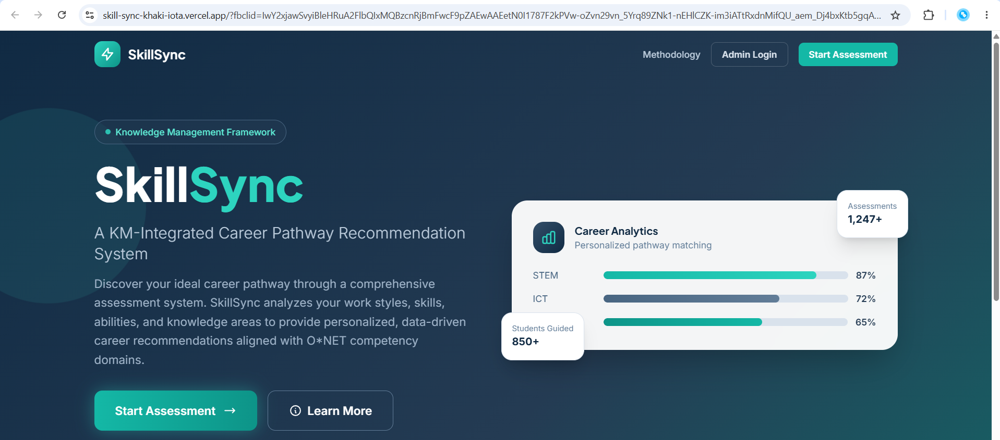
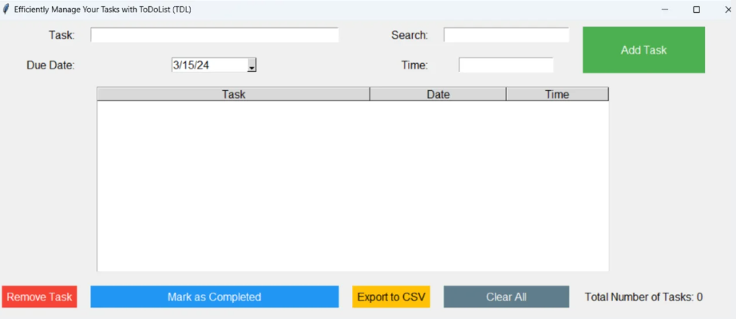

01
SkillSync
A knowledge-management-guided career pathway recommendation system designed to help Senior High School students understand their competencies and explore suitable career pathways.
Bachelor of Science in Information Systems
I am an aspiring Information Systems professional passionate about using technology, information, and creativity to develop practical solutions that make work simpler, decisions smarter, and user experiences better.
Get to Know Me
I am Marie Ivone C. Forones, an aspiring third-year Bachelor of Science in Information Systems student who believes that technology is most powerful when it makes work simpler, decisions smarter, and experiences better.
To me, Information Systems is not only about technology. It is about combining information, creativity, people, and innovation to create meaningful improvements for organizations and communities.
Throughout my academic journey, I have participated in projects and learning activities that strengthened my abilities in requirements gathering, process analysis, system documentation, problem-solving, communication, and team collaboration. These experiences have helped me become more adaptable, responsible, and confident in facing new challenges.
Understanding workflows and identifying opportunities for improvement.
Organizing system requirements, processes, and project information.
Working responsibly with others to accomplish shared project goals.
What I Have Created

A knowledge-management-guided career pathway recommendation system designed to help Senior High School students understand their competencies and explore suitable career pathways.

A point-of-sale management system developed to streamline sales transactions, inventory monitoring, and daily business operations.

An inventory management solution designed to track product quantities, monitor stock movements, and improve the availability of inventory information.

A task management application that allows users to organize, monitor, and complete their daily responsibilities more efficiently.

SkillSync: A Recommendation System for Career Pathway among Senior High School Students Using the Knowledge Management Framework

A research paper presenting the development and evaluation of the Ukayan sa Dakbayan Staff Management System, a digital platform created to automate attendance, cash advance tracking, and payroll computation for a local thrift business in Davao City.
Milestones and Learning Badges

Introduction to IoT and Digital Transformation – A223
Completed a six-hour learning activity focused on how the Internet of Things supports digital transformation and creates new opportunities in technology.

Introduction to IoT and Digital Transformation – A223
Gained introductory knowledge of connected devices, programming concepts, and the role of smart technologies in digital transformation.

Introduction to IoT and Digital Transformation – A223
Developed an understanding of how connected technologies collect data and how information can be interpreted to support smarter decisions.

IT128.A323 Networking Essentials
Learned the fundamental concepts of computer networks, network devices, connections, and the role of networking in modern digital systems.

IT128.A323 Networking Essentials
Strengthened my understanding of how devices connect to networks, access shared resources, and communicate within network environments.

IT128.A323 Networking Essentials
Learned foundational Internet Protocol concepts, including addressing, device communication, and the movement of information across networks.

IT129.A323 Introduction to Cybersecurity
Gained introductory knowledge of cybersecurity threats, vulnerabilities, and the importance of identifying risks that may affect users and digital systems.

IT129.A323 Introduction to Cybersecurity
Learned about basic security controls and protective measures that help safeguard information, devices, networks, and digital systems.

IT129.A323 Introduction to Cybersecurity
Developed awareness of cybersecurity resources, security practices, and the responsibilities involved in supporting safer digital environments.
Professional Learning

Cisco Networking Academy
Completed foundational training in cybersecurity concepts, common digital threats, system protection, and safe computing practices.
View Certificate
Cisco Networking Academy
Completed introductory training on connected devices, the Internet of Things, data-driven technologies, and their role in digital transformation.
View Certificate
Amazon Web Services Training and Certification
Demonstrates foundational knowledge of artificial intelligence, machine learning, generative AI, responsible AI practices, and relevant AWS services and use cases.
View Credential
Microsoft
Demonstrates proficiency in Microsoft Excel, including worksheet management, formulas, functions, tables, charts, and data organization.

Erasmus University Rotterdam through Coursera
Developed an understanding of innovation strategies, organizational creativity, idea development, and the management of innovation within organizations.
Verify Certificate
Google through Coursera
Covered Agile values, Scrum practices, iterative planning, stakeholder collaboration, team performance, and adaptive project delivery.
Verify Certificate
IBM through Coursera
Introduced essential concepts related to computer networks, network infrastructure, storage technologies, data availability, and system connectivity.
Verify Certificate
Google through Coursera
Covered the project life cycle, organizational structures, project roles, planning responsibilities, communication, and the foundations of effective project delivery.
Verify Certificate
Coursera Project Network
Applied business analysis and process management techniques to identify workflow issues, understand operational requirements, and propose process improvements.
Verify CertificateVerified Digital Credentials

Cisco Networking Academy
Demonstrates introductory knowledge of cybersecurity, cyber threats, vulnerabilities, threat detection, system defense, and career opportunities in the cybersecurity field.
Verify Badge
Cisco Networking Academy
Demonstrates introductory knowledge of the Internet of Things, digital transformation, data analytics, artificial intelligence, machine learning, and cybersecurity.
Verify Badge
Amazon Web Services Training and Certification
Recognizes completion of AWS Academy Cloud Architecting training, covering scalable cloud architecture, reliability, security, and the design of AWS-based solutions.
Verify Badge
Amazon Web Services Training and Certification
Recognizes foundational understanding of cloud computing, AWS services, security, pricing, cloud architecture, and the AWS shared responsibility model.
Verify Badge
Amazon Web Services Training and Certification
Recognizes completion of training in generative AI concepts, foundation models, responsible AI, and introductory AWS generative AI services and applications.
Verify BadgeLet’s Work Together
I would be happy to connect with you. Whether you have a question, would like to discuss a project, or want to explore an academic, internship, or professional opportunity, feel free to reach out.
Great ideas often begin with a simple hello!
Send Me an Email